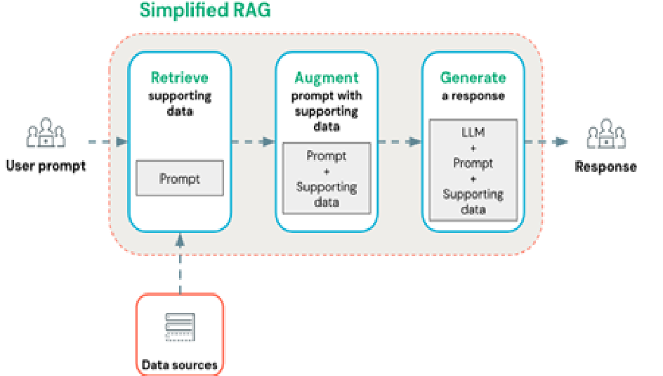

RAG architecture design
Implementation: collection workflow, JSONL normalization, Mistral embeddings, FAISS indexing, and response generation
Business value: turning open data into actionable recommendations for end users
Design a cultural chatbot based on a RAG pipeline to recommend events in the Paris region from OpenAgenda data.

This section mirrors the competencies described in annexes.md for this project.
Implementation: collection workflow, JSONL normalization, Mistral embeddings, FAISS indexing, and response generation
Business value: turning open data into actionable recommendations for end users
Implementation: combination of vector retrieval and filters by city, tags, and time window
Business value: better contextualized answers than lexical-only search
Implementation: guardrails to detect off-topic prompts, overly broad queries, and global-statistics requests
Business value: fewer irrelevant answers and stronger usability robustness
Implementation: unit and integration tests for the RAG pipeline, corpus quality, and FAISS behavior
Business value: reduced regressions during bot evolution
Implementation: Streamlit interface with source traces and readable reliability indicators
Business value: easier adoption by non-technical users
Design a cultural chatbot based on a RAG pipeline to recommend events in the Paris region from OpenAgenda data.
End-to-end RAG pipeline (collection, vectorization, indexing), FAISS + metadata hybrid retrieval engine, Streamlit interface, tests, and technical documentation.